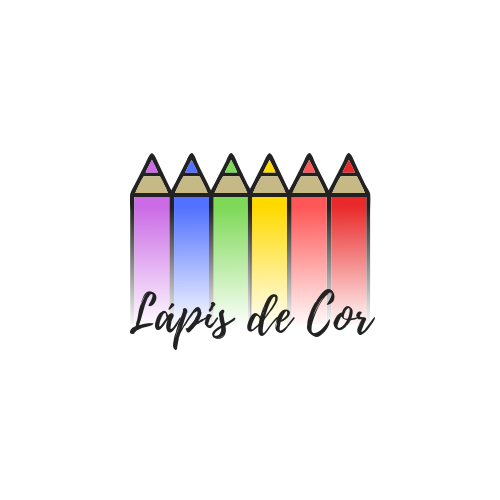

Aula 4:
Lápis de Cor:
A Creche Lápis de Cor percebeu que suas crianças estavam com problemas de organizaçao e disciplina. Por isso, decidiram criar uma campanha para os pais falando sobre a importancia dos acordos, regras e rotinas. Voce foi contratada para fazer a arte que será evniada por WhatsApp para todas as mães das crianças que estudam na creche.
Pesquise ou veja nas apostilas anteriores frases, palavras e imagens relacionadas ao tema e crie uma arte, lembrando de inserir a logo da empresa que está no topo desta página.